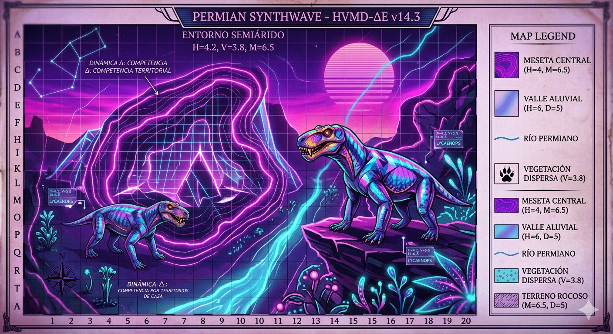

Banda sonora oficial de PalEntropía
PalEntropía no es solo paleoarte y divulgación científica. También es una experiencia audiovisual donde la música acompaña los ecosistemas, los paisajes perdidos y los viajes temporales que forman parte del proyecto.
Aquí se publicarán las composiciones originales Synthwave utilizadas en PalEntropía, junto con futuros reproductores, visualizadores de audio y colecciones temáticas.